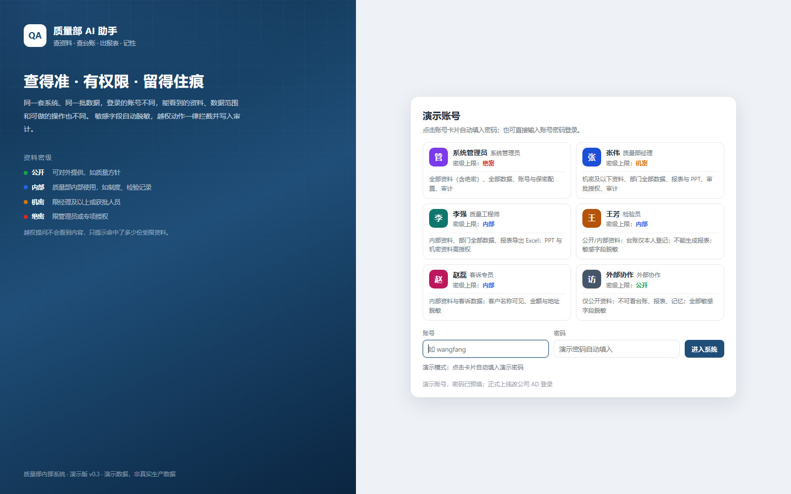
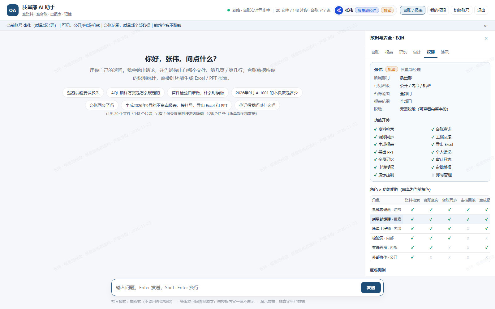
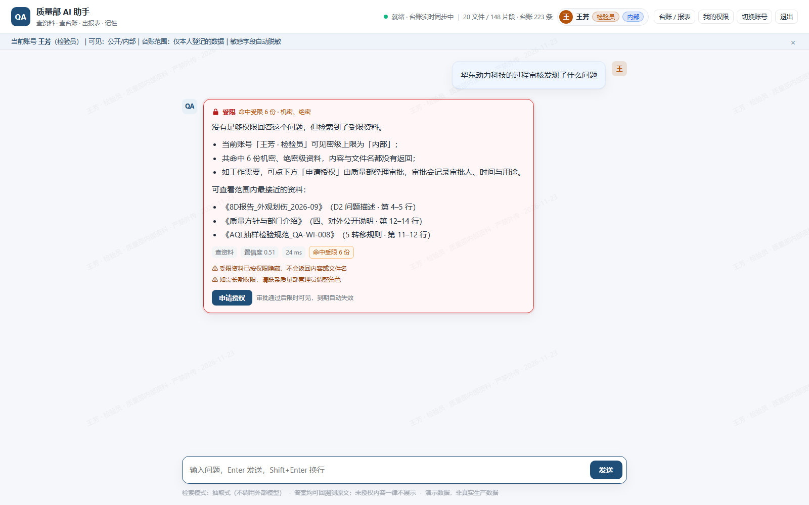
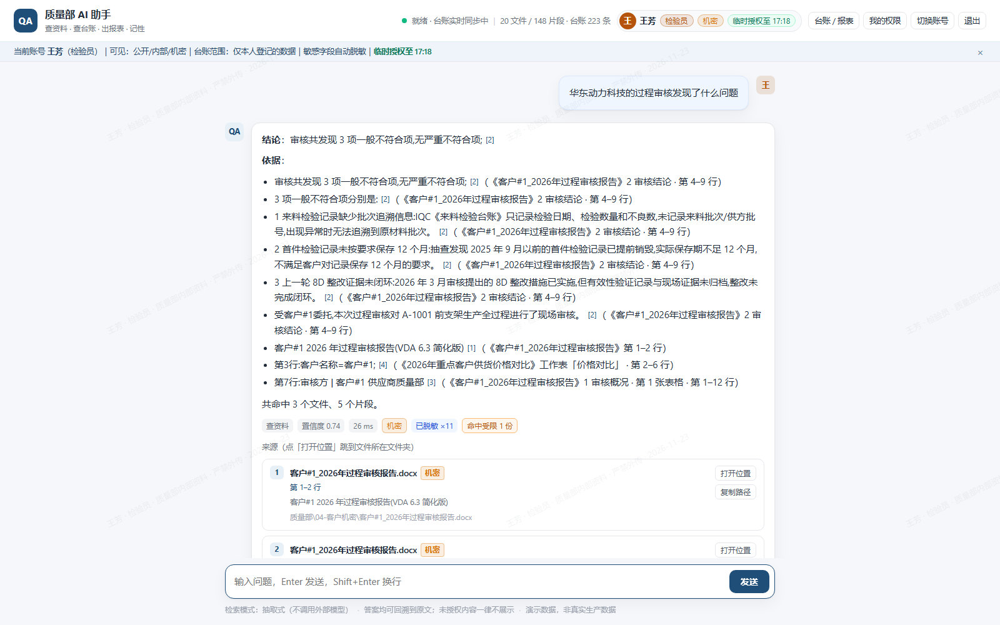
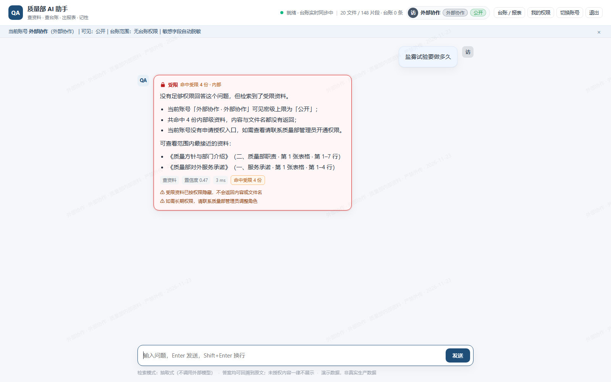

Case 01 · 内部项目 · 交付与验收
制造业质量部 AI 助手
Enterprise Quality Department AI Assistant
面向 30–40 人质量部门交付内网 AI 助手，覆盖 688 份质量文档，检索定位耗时缩短 50%–70%。

架构设计与本地索引
针对文件命名混乱及敏感台账严禁明文出网的约束，采用「服务端集中推理 + Windows 客户端执行 + MCP 脱敏」架构，接入共享盘 688 份文档索引及 Excel/Word/PPT 工具，实现基于原文与完整路径的溯源检索。

异常边界与权限隔离
设计 6 角色 × 14 项功能权限矩阵，重点补充关键词缺失、依据不足拒答、越权目录隔离及断网降级用例；实测验证四级密级越权拦截与 30 分钟临时授权下的二次字段脱敏。


缺陷闭环与上线推进
逐条核验检索输出与台账报表统计结果，将引用错页与答非所问记录为缺陷并推动回归修复，最终在部门 30–40 人团队落地使用。

